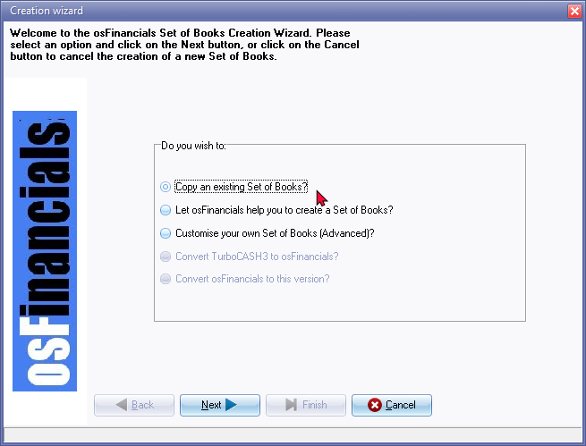
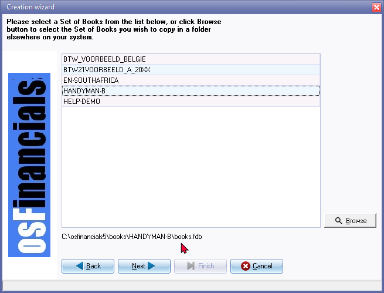
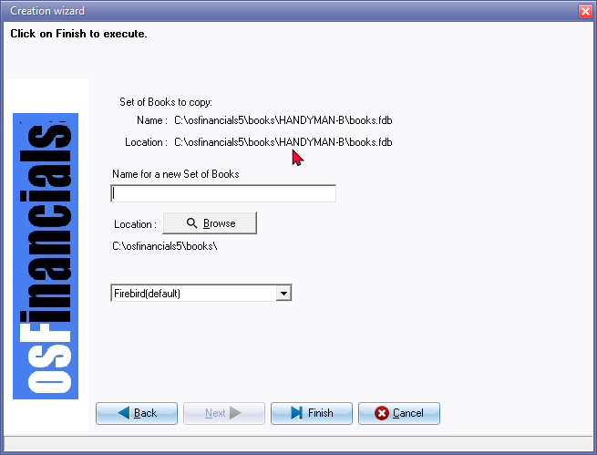

Copy an existing Set of Books
This option allows you to create a new Set of Books by making an exact copy of an existing one, including all the data it contains. You can select the Set of Books you want to copy, and the system will create a new one in a directory of your choice.
This new Set of Books can be accessed within the osFinancials program, even if it is not created in the osFinancials directory. You may keep your Set of Books in any mapped directory, i.e. on a local or network drive.
To create a copy of a Set of Books:
- On the Start ribbon, you can select the Create Set of Books option or simply press the F10 key on your keyboard.

- osFinancials automatically defaults to the option “Let osFinancials help you to create a Set of Books?”, as this is the recommended option for most users. Select the "Copy an existing Set of Books?" option.
- Click on the Next button.
 - Select any of the available Set of Books on your system. If you do not find the Set of Books on the list, you may click on the Browse button to find a Set of Books from the "Pick a directory" screen.
- Click on the Next button.

- Enter the name for your new Set of Books.
|
|
The name must not already exist and may not be longer than 50 characters. This name will help you to identify your Set of Books on your system and you will need to select this name, whenever you need to open the Set of Books or perform some other functions on the Set of Books. |

|
|
The Directory in which you create the Set of Books is displayed underneath the Location Browse button. It will usually be the default directory in which osFinancials5 is installed, or the directory which you have specified when you installed osFinancials5. If you wish to create your Set of Books in any other directory or location on your system, you may click on the Browse button to select any folder or drive on the "Pick a directory" screen. |

- Click on the Finish button. A confirmation message is displayed:
Are you sure you want to create the MY-BOOKS Set of Books?
- To confirm that you want to create the Set of Books, click on the Yes button. An information message
MY-BOOKS Set of Books created!
- Click OK. The new Set of Books, which is a copy of another Set of Books, is automatically opened and ready to work in.
|
|
Year-end confirmation Should you open the Set of Books, and the date of the end of the year, is in the past, a confirmation message will be displayed, for example; This year Ends on 2022/02/28 You need to adjust the Start of the financial year in one of the following options on the Setup ribbon:
|
|
|
If you have created a copy of an existing Set of Books, which already has transactions and balances: If you do wish to have a clean Set of Books with no transactions and balances, you may need to clear / reset the transactions and balances in the Set of Books. (See Global processes → Clear / Reset on the Setup ribbon). All the master files (accounts, etc.) will be available and you may then enter your own transactions and balances in the new Set of Books. |
|
|
This is similar to Save as option on the Start ribbon), where you may save an exact copy of an existing Set of Books with a new name. |

|
|
You may also copy all the settings and data of an existing Set of Books into a new Set of Books using Global processes → Copy from a Set of Books on the Setup ribbon. |